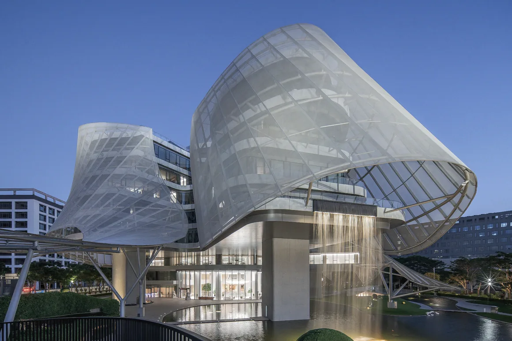
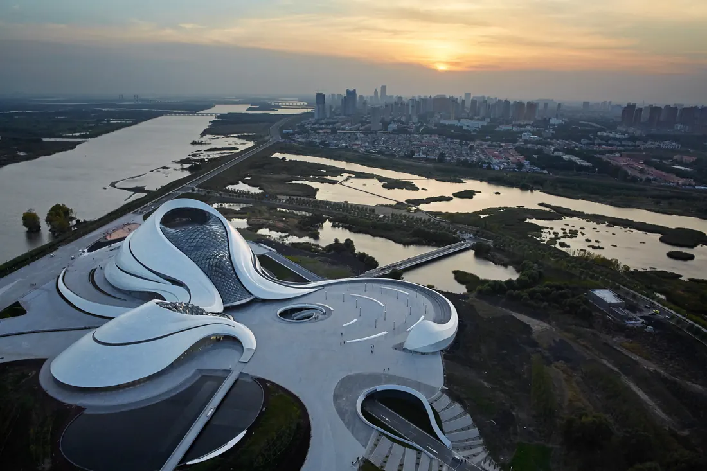
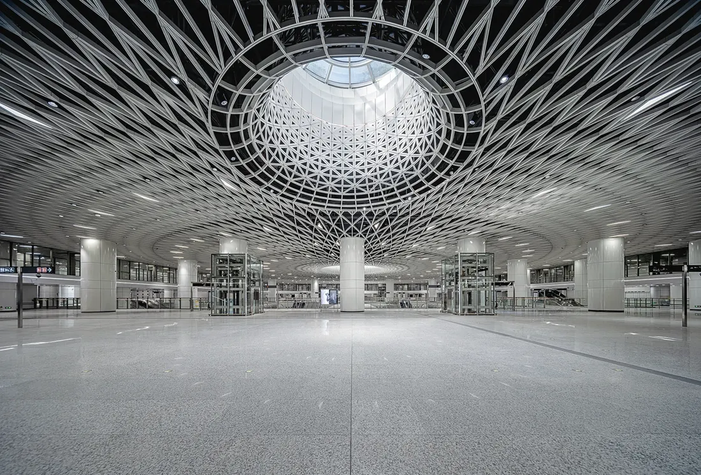
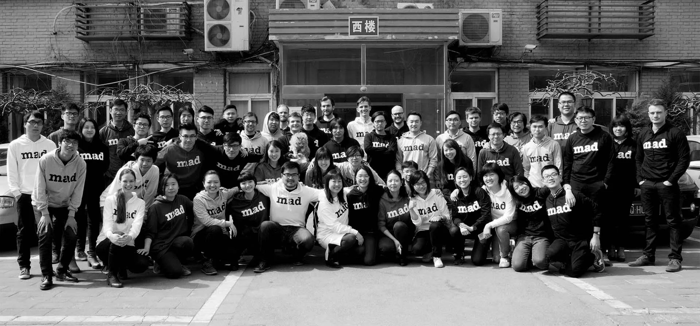
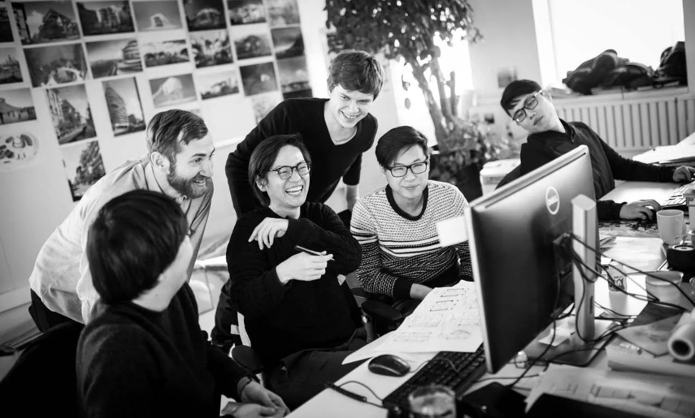
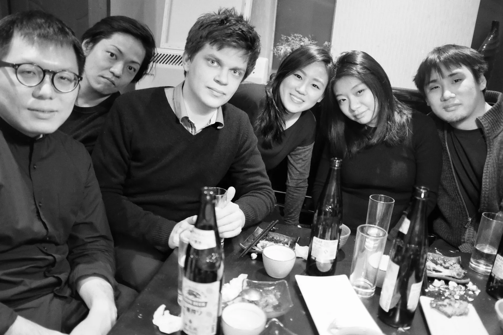
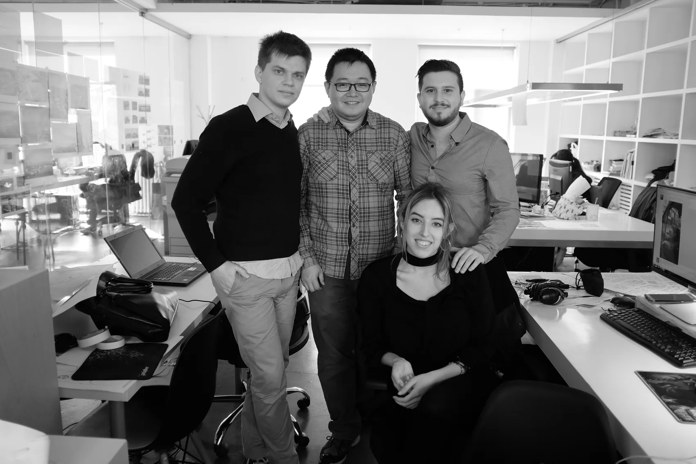
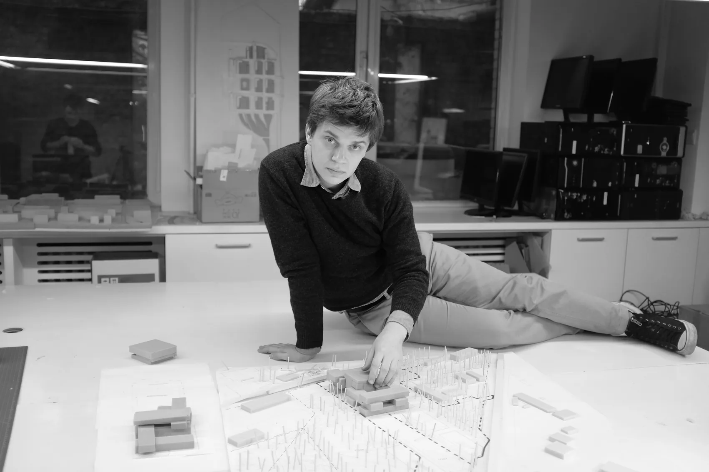

First person in, three times.
The first hire at a Chinese architecture firm’s European office, set up in Poland from zero. One of two founding members of MAD Architects’ parametric design group in Beijing. The first product person in Heineken’s Global Analytics & AI Hub. Each time, the hard part wasn’t building the thing. It was getting people to use it.
Decision tools people actually use
Heineken spends about €7.9 million on marketing and sales a day. Someone decides where every one of those euros goes. The models were ready early. The people deciding still trusted their spreadsheets more.
Allocation AI
Where to spend the marketing budget.
- Bayesian allocation across markets, brands and channels.
- More profitable spend with incremental gross profit reported in Mexico, Brazil and the Netherlands.

Promo Advisor
What to promote, and how.
- Diagnostics and simulation so every promotion is tested before it launches.
- Calendar optimisation across the year, scored on whether each promotion pays back.

Smart Flighting
When campaigns run, week by week.
- Timing on response curves tested week by week before media is booked.
- The Excel process, retired and replaced with a simulator media teams plan in.

Then the measured lift decides next year’s budget.
Three edges, one center.
I trained as an architect and wrote the parametric tools behind double-curved facades in Beijing. I spent five years in China, leading a team of architects and winning new work in Mandarin. Now I build with AI agents, hands-on, every day. Product is where the three meet: I can shape what people see, earn the trust of the people who will use it, and build the first version myself.
One person, a few agents.
I build with Claude Code and AI agents. I decide what gets built and why, the agents write most of the code, and I review every change. One rule across everything: the model reads and summarises, deterministic code decides.
Yaga Labs
My experimentation platform.
- Agents, small AI tools and black boxes you can argue with.
- Pani Yaga is its conscience. She has opinions about your model.
Yaga game ↗
A small 3D farm game. A witch whose hut stands on chicken legs hunts bugs, grows pumpkins and protects her hens. No build step; Vercel deploys straight from main.
Stary Kostrzyn ↗
The old town and fortress of Küstrin, destroyed in 1945, rebuilt to walk through. Built from the 1913 plan and address book, 1860 fortifications and today’s LiDAR.
Elliott waves
Elliott wave analysis of Bitcoin, built on historical price data.
Back in China, the fitness function was the eval.
Five years working in China, back and forth ever since. I wrote the scripts behind a facade and an opera house interior at MAD, and competition wins at AREP. A decade before “AI agent” was a phrase, I was building evolutionary solvers that bred building geometry from a fitness function.

Xinhee Design Center ↗
The parametric model behind the double-curved PTFE membrane facade, optimising membrane cost and buildability at once.

Harbin Opera House
Parametric timber interior, detailed down to fabrication.

Gangxia North hub
Parametric skylights and entrances for the competition win.
The Xinhee facade, evolving
An evolutionary solver breeds the membrane geometry, scoring every generation on cost and buildability.





Optimal was easy. Buildable was the job.
Got a black box nobody uses?
Tell me what it predicts and who ignores it. I’ll tell you what I’d build first.